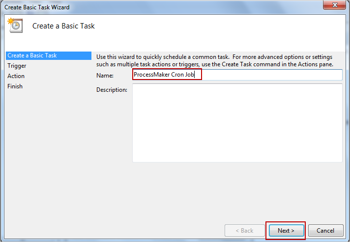
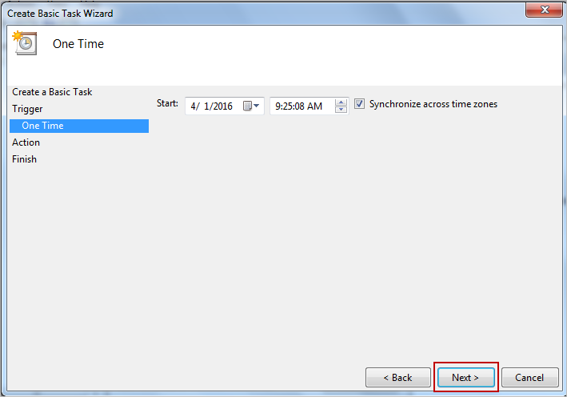
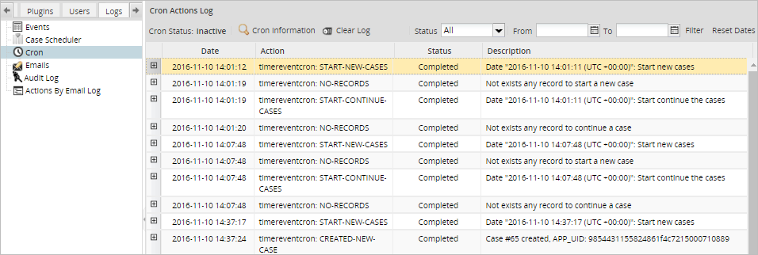
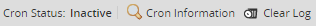
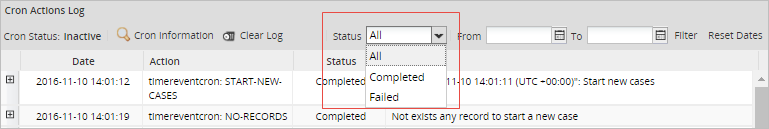

Overview
ProcessMaker is a web application that normally executes actions in response to users' actions. Nonetheless, actions that aren't initiated by the user, such as timer events and sending email notifications, are only executed when the following cron scripts are run:
- cron.php: This is the principal cron script, which:
- Sends out any emails in the notification queue,
- Unpauses any case whose pause time has expired,
- Calculates the elapsed time (according to the configured calendar) of all open tasks in active cases,
- Executes any events for classic (ProcessMaker 2) processes,
- Starts any scheduled cases for classic (ProcessMaker 2) processes,
- Updates the labels in active cases,
- Executes the trigger for self service cases that have a configured timeout setting.
- messageeventcron.php: This script executes the send and receive message events and the email intermediate throwing and email end events in BPMN processes.
- timereventcron.php: This script executes timer start and intermediate timer events in BPMN processes.
- ldapcron.php: This script executes LDAP and Active Directory synchronization, which is an option available in Advanced LDAP/AD in the Enterprise Edition.
- sendnotificationscron.php: This script, which is new in version 3.1, sends notifications when cases are created and when cases are routed to new tasks.
For testing purposes, these cron scripts can be executed manually from the command line of the server where ProcessMaker is installed.
For production use, it is best to automate the execution of the cron scripts by following the instructions below to either configure a cron job in Linux/UNIX or set up a scheduled task in Windows. Note that it is not recommended to execute these scripts more than once every five minutes due to the heavy processing that they incur.
Setting Time Zone
In order for the cron scripts to execute correctly, it is recommended that the same time zone be set in both the servers' php.ini file and in ProcessMaker's env.ini file.
For example, a ProcessMaker server located in New York should have the
following line in its workflow/engine/config/env.ini file:
Likewise, its php.ini file should contain the following line:
It is also recommended to set the server's clock to use same time zone in Linux or Windows.
Manually Executing Cron Scripts
| Note: If using ProcessMaker 3.1.3 or later, please follow the instructions in the 3.2 version of the Executing Cron Scripts page. |
The cron scripts can be executed from the command line on the server where ProcessMaker is installed, which means that PHP-CLI should be installed on the server running ProcessMaker. The ProcessMaker Windows Installer automatically installed PHP-CLI, but it may not have been installed if ProcessMaker was manually installed.
To test a feature executed by a cron script, open a terminal on the server where ProcessMaker is installed. If using Windows, a terminal can be opened by going to Start > All Programs > Accessories > Command Prompt. Then, enter the command to execute the workflow/engine/bin/cron.php file. The location of the file depends on the system. For example:
Windows:
Bitnami Installer for ProcessMaker 3.0.1.8 and later:
Note: Make sure to include the full path to execute PHP, so that the version of PHP installed by the Bitnami stack will be used, because it is compatible with ProcessMaker.
Automatic Installer in ProcessMaker 3.0.1.7 or earlier in Windows XP/2003:
Automatic Installer in ProcessMaker 3.0.1.7 or earlier in Windows Vista/7/8/10/2008/2012:
Linux/UNIX:
Manual installation:
Bitnami installation in ProcessMaker 3.0.1.8 and later:
messageeventcron.php, timereventcron.php, ldapcron.php and sendnotificationscron.php are files that are found in the same directory and are executed in the same way as the cron.php file.
If the cron script is executing without any options, all pending activities will be automatically executed for all workspaces. For testing purposes, the +d option can be used to specify an alternative date and time for the script, so events and scheduled cases in the past or future can be executed. To save processing in the cron.php script, it may be useful to specify only certain workspaces or to specify that only certain types of activities (events, scheduled cases, notifications, etc.) be executed.
Syntax of Cron Options
Options:
+d"YYYY-MM-DD HH:MM:SS" Specify an alternative date and time for the script.
By default, the script will execute using the server's current system time. It may be useful to specify an alternative date and time when testing for past or future events or scheduled cases. Remember to use 4 digits for specifying the year and 2 digits for specifying the month, day, hour, minute and seconds. The time is on a 24 hour clock.
Ex:cron.php +d"2016-03-30 10:30:59"+wSpecify a workspace whose pending activities will executed.
By default, the pending activities in all workspaces are executed. To save processing, it can be useful to only execute the pending activities in a single workspace. Remember the workspace names are case sensitive and the default workspace is namedworkflow.
Ex:cron.php +wworkflowACTIVITIESdefine which activities should be executed by the cron.php script:events: Execute any pending events.scheduler: Execute any pending scheduled cases.unpause: Unpause cases (which are scheduled to be unpaused).emails: Send any pending emails.plugins: Activate any pending plugins.calculate: Calculate the elapsed time (according to the configured calendar) of all open tasks in active cases.unassigned-case: Run the trigger for self service cases that have a configured timeout setting.
Multiple activities can be specified by separating each one with spaces:
Ex:cron.php events emails plugins+forceThis option ensures that the cron script is executed by stopping the execution of any existing cron script and deleting its temporary files, so the current cron script can be executed. Remember that only one instance of a cron script can be executed at a time, so without the+forceoption, the cron script will not be executed if another instance is already being executed.
When a cron script executes, it will report which activities were executed and how many workspaces were processed:
Note: To cancel the execution of a cron script, press CTRL+C in the command line or use the kill command in Linux or the Task Manager in Windows to kill the process. The next time a cron script is run, an error message will be displayed. To avoid this problem, either delete the cron temporary file shared/cron or use the +force option.
Example:
Start executing a cron script and before it ends, press Ctrl+C to terminate it. Then try to execute it again, and the following message will be displayed:
To be able to execute the cron script without errors, add the +force option.
Cron Log Files
To keep track of what actions have been taken by a cron script, check the file shared/log/cron.log, which keeps a record of all the cron actions. Each line in the log file has the following format:
If the action is "executeEvents", then the log file will list both the starting time and the ending time.
If an error occurs in a cron script, the file shared/log/cronError.log will be created if it doesn't already exist and it will contain a line like the following:
For example, this error message indicates that the email settings in ProcessMaker haven't been configured.
Checking if a Cron Script is Running
To figure out whether a cron script is currently running or the last time it was executed, check the serialized contents of the /opt/processmaker/shared/cron file. If the value of flagIsRunning is "1", then the script is currently running.
If it is "0", then the script is not currently running.
Alternatively, open the file with a PHP script and unserialize it:
if (file_exists("/opt/processmaker/shared/cron")) {
$aCron = unserialize(file_get_contents("/opt/processmaker/shared/cron"));
// if cron.php is NOT currently running:
if ($aCron['bCronIsRunning'] == 0) {
... //do something
}
}
?>
Executing timereventcron.php
When the /workflow/engine/bin/timeeventcron.php script is executed, it will print out which timer events were executed.
For example:
In this example, the timereventcron.php script finds one start timer event to initiate a new case and routes it to the second task in the process. It doesn't find any intermediate timer events to execute.
Note: The (UTC + 00:00) does not represent the time of the cronjob when the trigger will be executed, but is only a referential time zone for internal calculation.
In addition, the following lines will be added to the shared/log/cron file:
Executing sendnotificationscron.php
The sendnotificationscron.php script sends notifications to the mobile device when cases are created and when cases are routed to new tasks.
Information about the notifications is stored in the wf_<workspace>.NOTIFICATION_QUEUE table.

The NOT_STATUS field details the notification status: "Pending", "Sending" or "Sent".
Note that notifications will be recorded only if the mobileNotifications flag is set to True in the env.ini configuration file. Otherwise, no notification will be stored in the table or sent to the mobile device.
To send the notifications execute the following command:
For example:
Notifications will be sent first to Android devices and then to iOS devices.

Configuring Crontab in Linux/UNIX
In Linux/UNIX, commands can be executed at scheduled times with the cron daemon. To configure cron to periodically execute ProcessMaker's cron scripts, log in as the root user and edit the file /etc/crontab with your favorite plain text editor, such as vim or gedit (or alternatively create the file /etc/cron.d/processmaker).
In the crontab file, the timing of commands is listed according to the format:
where:
| Field | Description |
|---|---|
| minute | The minute of the hour when the command is executed. Can be between 0 and 59. |
| hour | The hour when the command is executed. Can be between 0 and 23. 0 is midnight. |
| day-of-month | Day of the month when the command is executed. For example 20 would be the 20th day of each month. |
| month | Month when the command is executed. Can be a number between 1 and 12 or the first three letters of the month in English, such as jan, feb, etc. |
| day-of-week | Day of the week when the command is executed. Can be a number between 0 and 7, where 0 and 7 are both Sunday, 1 is Monday, 2 is Tuesday, etc. Alternatively, can be the first three letters of the day in English such as sun, mon, etc. |
| user | The username of the user who will execute the command. |
| Command | Command, script or program to execute. |
An * (asterisk) in the first five columns indicates all possible values. For instance, an asterisk in the minutes column indicates all the minutes in the hour. If an asterisk is divided by a number */#, then it stands for any time unit that can be cleanly divided without any remainder. For instance, in a day with 0-23 hours, */5 would execute on hours 0, 5, 10, 15 and 20.
The following example executes cron.php every 15 minutes and messageeventcron.php every 20 minutes of every even hour in an installation of ProcessMaker Community Edition:
In this example, */15 in the first line means execute cron.php at 0, 15, 30, 45 minutes of every hour. Likewise, */20 */2 in the second line means execute messageeventcron.php at the minutes 0, 20 and 40 of the hours 0, 2, 4, 6, 8, 10, 12, 14, 16, 18, 20 and 22.
If needing to execute all the cron scripts, it is recommended to vary the time when they execute so that each script has time to finish processing before the next script starts. In this example, each of the cron scripts are executed twice each hour, but the cron.php script is given 10 minutes to finish processing before starting the next script, whereas the rest of the cron scripts are given 5 minutes to finish processing.
In a Bitnami installation, the path needs to be adjusted to use the Bitnami installation of PHP:
Remember to add the +force option to ensure that a cron script will be processed at a specified time. This option will cut short the processing of an existing cron script, so it is better to space out the cron scripts so they don't overlap. The cron.php script can take a long time to process if there are a large number of active cases or a large number of workspaces to process. The ldapcron.php script can also be slow if synchronizing thousands of LDAP/AD users. For a large scale deployment, it is recommended to test the cron scripts from the command line to see how long it takes to execute each one.
For example, if using a large scale deployment with thousands of active cases, it might be better to plan 20 minutes to process the cron.php script. Likewise, it might be better to only run the ldapcron.php script at midnight to synchronize the accounts of thousands of LDAP/Active Directory users.
For more information on how to configure the crontab, see this tutorial (or this tutorial in Spanish).
Scheduling a Task in Windows
The cron scripts can be periodically executed as a Windows Scheduled Task. To configure its execution, either use the SCHTASKS command in DOS or create a Scheduled Task in the graphical interface.
SCHTASKS Command
The SCHTASKS command is used to create, delete, query, change, run and end Windows Scheduled Tasks. Log in to Windows as an administrator and open the system command prompt. Then, create a scheduled task to periodically execute the cron script:
where:
ScheduleType: How often the cron script will be executed. The available options are:Schedule type Description MINUTE, HOURLY, DAILY, WEEKLY, MONTHLY Specifies the time unit for the schedule. ONCE The task runs once at a specified date and time. ONSTART The task runs every time the system starts. You can specify a start date, or run the task the next time the system starts. ONLOGON The task runs whenever a user (any user) logs on. You can specify a date, or run the task the next time the user logs on. ONIDLE The task runs whenever the system is idle for a specified period of time. You can specify a date, or run the task the next time the system is idle. TaskName: The name of the task. The task name should be enclosed in double quotations.command: The command to execute the cron script. The command should be enclosed in double quotation marks. If it contains any paths or options that contain spaces, then they should be enclosed in single quotations marks or escaped double quotation marks. Escaping of quotation marks is done with backslashes:\".
For example, to execute the cron.php script every hour starting at 11:25 for a ProcessMaker server installed with WampServer at c:\opt\ProcessMaker\:
Or to execute the cron.php script only on the "sales" workspace every 2 minutes:
After scheduling the periodic execution of cron.php, verify that it is in the list of Scheduled Tasks with the command:
To delete a task command:
For more information about the SCHTASKS command:
Scheduled Task in Windows 7
On the server running ProcessMaker, open the Task Scheduler by going to Start > Programs > Accessories > System Tools > Task Scheduler and select the "Create Basic Task" option.

The Scheduled Task Wizard will appear. Give the task a name, such as "ProcessMaker Cron Job" and click Next.

Choose the frequency with which to perform the task. For this example, the task will be executed one unique time, so select One Time and click Next.

Choose specific date and time options (this step will vary, depending on the option selected in the previous step).

Select the Start a program option and click Next.

On the next window, enter a command to execute cron.php.
For example:

In the next window, confirm the command by clicking on Yes.

Finally, review the information of the summary, and click on Finish.

Restart Cron When it is Stopped Abruptly
When a cron script is executed, it checks to see whether another instance of the cron script is already running by checking whether a temporary cron file already exists. If for some reason cron is stopped abruptly, the temporary cron file needs to be manually deleted in order to be able to execute the cron script. If the temporary cron file exists, the following message will display when executing the cron script:
To solve this problem, delete the temporary file named shared/cron
Note: To avoid this issue, it is recommended to wait until the cron script finishes its execution, or use the +force option.
Checking the Cron Log in ProcessMaker
The contents of the cron log are available under the Admin menu. The cron log can be checked after cron is executed to see the results for a specific workspace or for all workspaces. Only users such as the "admin" who have the PM_SETUP_ADVANCE permission in their roles have access to the cron log.
After the cron is executed, the contents of the log can be viewed at Admin > Settings > Logs > Cron.

Location of the Cron Log File
When a cron script is executed, output from the script is stored in the shared/log/cron.log file on the ProcessMaker server. For example:
2017-02-10 23:42:19 | workflow | resendEmails | action | Resending Emails
2017-02-10 23:42:21 | workflow | unpauseApplications | action | Unpausing Applications
2017-02-10 23:42:49 | workflow | calculateDuration | action | Calculating Duration
2017-02-10 23:42:49 | workflow | executeEvents | action | Executing Events , 2017-02-10 23:42:17
2017-02-10 23:42:50 | workflow | updateCaseLabels | action | Update case labels
2017-02-10 23:42:50 | workflow | unassignedCase | action | Unassigned case
2017-02-10 23:44:15 | workflow | main | action | checking folder /opt/pm3.1.3/shared/sites/workflow
If a non-fatal error occurred while executing a cron script, it may be stored in the shared/log/cronError.log file. Some types of errors, however, will not be recorded in the log file, so it recommended to manually execute the cron scripts from the command line to check whether any error messages are printed out on screen if the cron scripts do not appear to be executing correctly.
Cron Log Options

- Cron Status: Displays Active when cron is currently being executed. It displays Inactive when cron is not currently being executed.
- View information: Shows the following information about cron: Status, Last Execution and Log Information, which specifies the folder where the cron.log file is located.

- Clear log: Click to clear the log of all workspaces where the cron is executed or just a specific one. This log is deleted in the location shared/log/cron.log.
Search Options

- Status: Search by cron status: Failed, Completed or All.

- From and To: Specify the days when the cron was executed.
Menu Options

- Date: Date when the cron was executed.
- Action: Name of the action that was executed.
- Status: Cron status.
- Description: A brief description of what the cron execution was about.